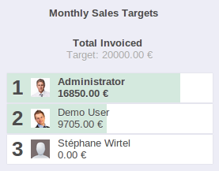
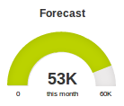

Boost Engagement With Gamification
Define clear objective and provide real time feedback
Inspire achievement with challenges, goals and rewards. Define clear objectives and provide real time feedback and tangible results. Showcase the top performers to the entire team and publicly recognize a job well done.
Leaderboards

Promote leaders and competition amongst sales team with performance ratios.
Personal Objectives

Assign clear goals to users to align them with the company objectives.
Team Targets

Compare revenues with forecasts and budgets in real time.